Replacing Eject Plate
This procedure describes how to replace the analytical wash eject plate.
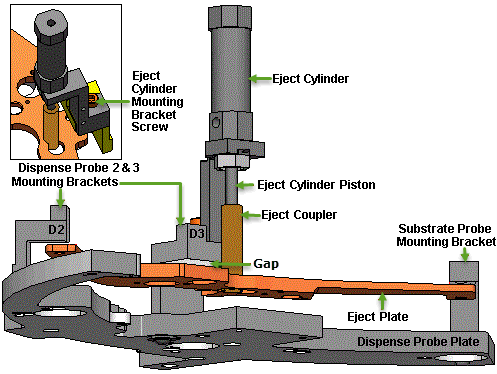
-
Shut down the DxI instrument.
- Select Configure > PC Admin > System Admin > Shutdown Instrument to exit the software in preparation for powering off the instrument.
- Enter the password Access2Support, and then select OK.
- At the pop-up You must now turn off the instrument, using the instrument power switch, select OK.
- After the instrument software has shut down, turn off the instrument at the power switch.
-
Remove the dispense, aspirate, and substrate probes.
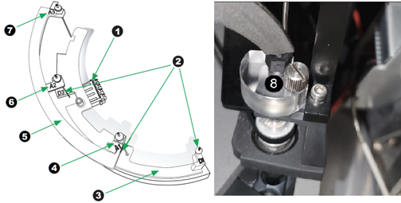
1 Sample rack used to position the dispense probe plate resting on the incubator cover 2 D1, D2, D3 dispense probes 3 Dispense probe plate (lower plate) 4 A1 aspirate probe on the A1 aspirate probe support arm 5 Aspirate probe plate (upper plate) 6 A2 aspirate probe on the A2 aspirate probe support arm 7 A3 aspirate probe on the A3 aspirate probe support arm 8 Substrate probe on the Substrate probe support arm - Remove the three dispense probes, three aspirate probes, and one substrate probe from the probe plates.
-
Remove the aspirate probe wash manifold from the dispense probe plate.
Rotate the manifold and tubing clockwise until the key lines up with the key slot and then pull the manifold down and remove it from the dispense plate.
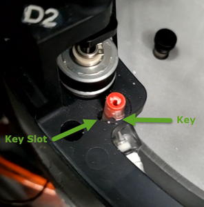
- Place all probes in a location where they are safe from damage.
-
Prepare the cables for removal of the dispense plate.
-
Remove the connectors from the upper analytical module interface PCB on the left side of the upper right card cage:
Caution: Before removing the connectors from the upper analytical module interface PCB, mark the electrical connectors for identification during reassembly.
- J2 - Mixer Motor
- J7 - Eject Arm
- J8 - Mixer Tach
- Guide the disconnected cables out of the channel in the tubing service panel.
- Remove all wires from the plastic clamp on top of the wash arm.
-
Cut the tie-wraps to separate or free these harnesses from the others.
Note where the tie-wraps are removed, for replacement during reassembly.
- Mixer Motor
- Eject Plate Sensor
- Mixer Tach Sensor (routed through two plastic clips, one below the bracket)
-
Remove the connectors from the upper analytical module interface PCB on the left side of the upper right card cage:
-
Remove the eject plate.
-
Mark and remove the two pneumatic lines from the eject plate air cylinder.
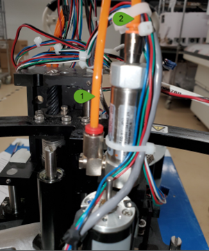
-
Remove the dispense plate and eject plate.
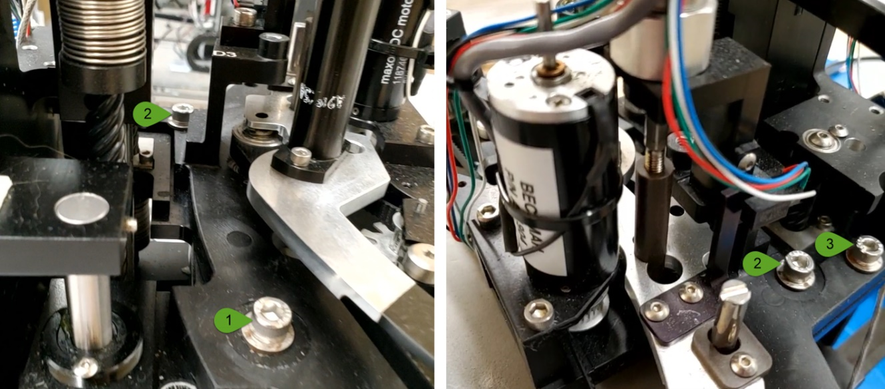
Note:- New dispense/eject plate has three 3/16-inch hex screws.
- Old dispense/eject plate has one 5/32-inch button-head hex screw, two 3/16- inch hex screws.
-
Remove the eject plate air cylinder and mounting bracket (one 5/32- inch hex screw).
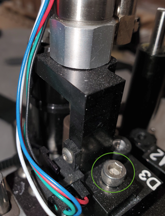
-
Remove the mixer motor (two 9/64-inch hex screws).
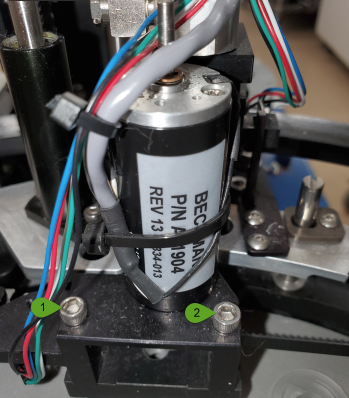
-
Remove the eject plate home sensor flag (two 1/16-inch hex screws).
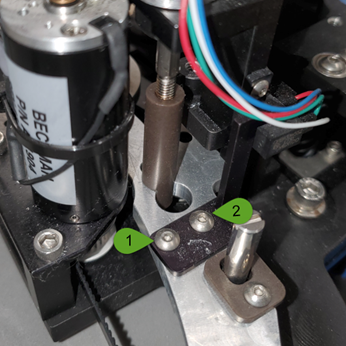
-
Remove the brown Delrin from the smaller guide rod (one 5/64-inch hex screw).
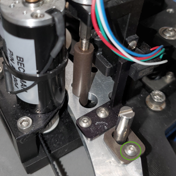
-
Remove the bearing tube from the larger guide rod (two 7/64-inch hex screws).
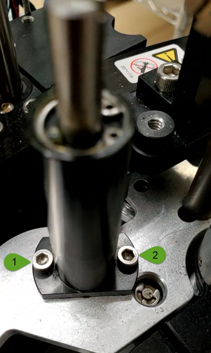
-
Remove the large guide rod (screw is below the dispense plate).
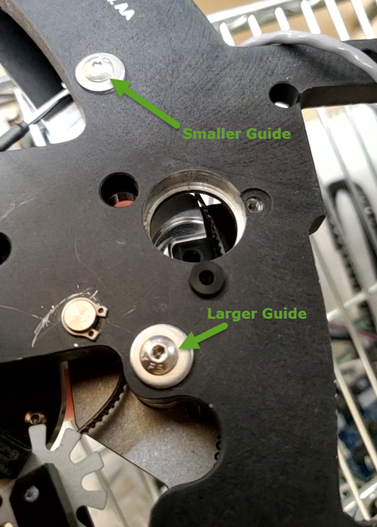
- Remove the smaller guide rod (screw is below the dispense plate).
- Lift the eject plate off the guide rods.
-
Mark and remove the two pneumatic lines from the eject plate air cylinder.
-
Install the eject plate.
- Install the eject plate onto the guide rods.
- Install the large guide rod (screw is below the dispense plate).
- Install the smaller guide rod (screw is below the dispense plate).
-
Install the eject plate air cylinder (one 5/32-inch hex screw).
Note: Ensure the brown coupler slides into the eject plate correctly.
- Install the bearing tube from the larger guide rod (two 7/64-inch hex screws).
- Install the brown Delrin from the smaller guide rod (one 5/64-inch hex screw).
- Install the eject plate home sensor flag (two 1/16-inch hex screws).
-
Install the mixer motor (two 9/64-inch hex screws).
Note: Ensure that the mixer belt is routed correctly.
-
Install the dispense plate and eject plate.
Note:
- New dispense/eject plate has three 3/16-inch hex screws.
- Old dispense/eject plate has one 5/32-inch button-head hex screw, two 3/16- inch hex screws.
- Install the two pneumatic lines to the eject plate air cylinder.
-
Prepare the cables for installation of the eject plate
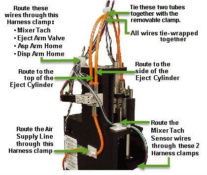
-
Install the connectors from the upper analytical module interface PCB on the left side of the upper right card cage.

- J2 - Mixer Motor
- J7 - Eject Arm
- J8 - Mixer Tach
- Install all the wires from the harness clamp located on top of the wash arm.
-
Install the tie-wraps to secure the harnesses.
- Mixer Motor
- Eject Plate Sensor
- Mixer Tach Sensor (routed through two plastic clips, one below the dispense plate bracket)
-
Install the connectors from the upper analytical module interface PCB on the left side of the upper right card cage.
-
Install the probes.
-
Install the substrate probe and dispense probe plate.
Note: If the probe is damaged, replace the probe with a new part.
- Install the aspirate probe was manifold (with duck-bill valve attached) into the dispense probe plate.
-
Install the three aspirate probes and three dispense probes into the probe plates.
Caution: Confirm that the tubing is routed correctly and is not kinked or pinched when the aspirate and dispense plates are lowered.
- Manually move the probe plates fully up and down and confirm that the wires and tubes are free from snags and not pulled tight.
-
Install the substrate probe and dispense probe plate.
- Power on the instrument.
-
Adjust and align the probe plates.
-
Adjust the eject plate.
Note: Refer to the AU: Adjusting Eject Plate procedure.
-
Adjust the dispense and aspirate plates.
Note: Refer to the AU: Adjusting Analytical Module procedure.
-
Align the dispense and aspirate plates.
Note: Refer to the AU: Aligning Analytical Module procedure.
-
Adjust the eject plate.
- Insert the interlock bypass.
-
Verify instrument operation after installation of the eject plate.
- Verify that all temperatures are stabilized and within specifications before performing verification tests.
- Run five cycles of substrate probe prime and 15 cycles of dispense probe prime.
-
View the wash assembly area and verify that there are no:
- fluid leaks
- motion errors
- kinked or pinched tubing
- other probe plate issues
- Remove all cover interlock switch bypasses and close all instrument covers.
- Initialize the system.
-
Verify system operation.
-
Perform system verification as stated in the Verification of Service Repair document .
Refer to the Admin: Verification of Service Repair document.
-
Perform system verification as stated in the Verification of Service Repair document .